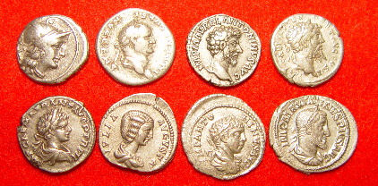
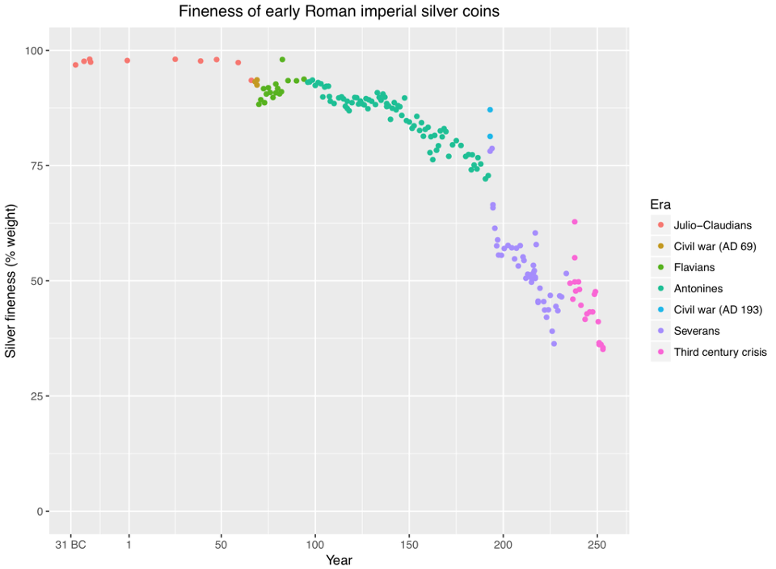
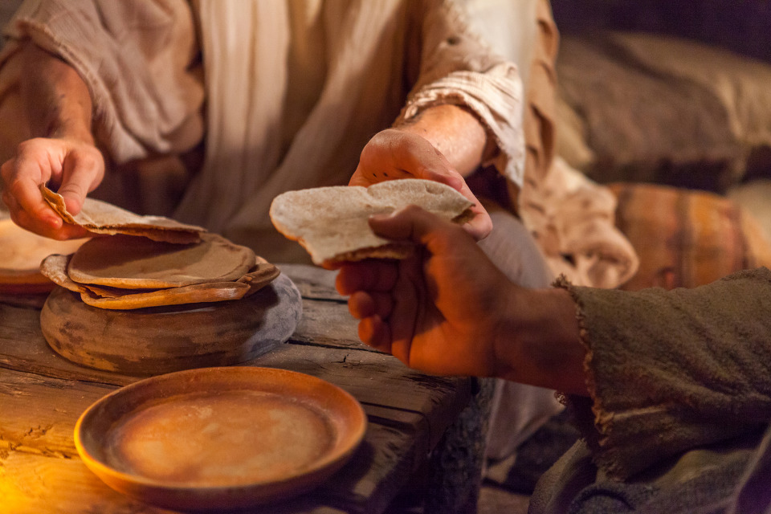
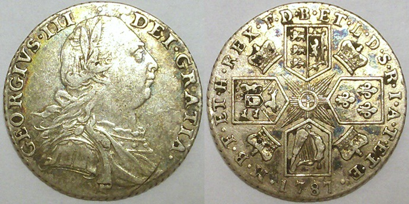
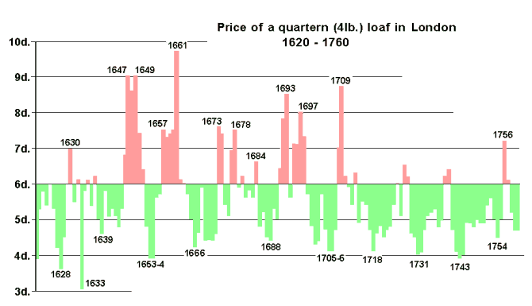
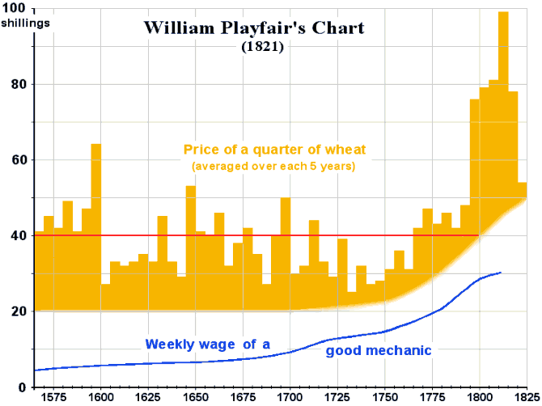

하루 일당으로 몇인분의 빵을 살 수 있었나 - 예수님과 영국군의 경우
게시: 2018-06-04T06:30:00+09:00
제 블로그를 오래 출입하신 분들께서는 눈치를 채신 분들이 꽤 있겠습니다만, 저는 원래 역덕이나 밀덕이라기 보다는 돈덕 먹덕에 가깝습니다. 즉, 역사 속의 돈 이야기와 먹을 것 이야기에 굉장히 관심이 많습니다. 최근 군인 연금 편이나 사탕무 설탕 제조법의 선구자 아카르트 편에서도 탈러(thaler)니 펜스(pence)니 하는 먼나라 옛나라의 돈 단위를 적었지요. 저는 그런 옛 화폐 단위를 적을 때 당시 화폐 속의 금이나 은의 함량을 기준으로 저 나름대로 환산을 합니다. 물론 현대의 금값이나 은값도 환율과 국제 투기 세력의 움직임에 따라 하도 변화무쌍하여 정확한 환산은 의미가 없고, 대충 1만원인지 10만원인지 구분하는 수준에서 만족하는 편이지요.
이렇게 제가 기준을 정한 것은 당시 화폐는 그 금화은화 속에 든 귀금속의 가치와 대략 일치했기 때문입니다. 물론 꼭 그랬던 것은 아니고 시대와 국가에 따라 다 약간씩 다릅니다만, 이는 영국 파운드화 표시만 봐도 알 수 있습니다. 영국 파운드화의 표시는 £ (L)입니다. 왜 파운드의 P가 아니라 L일까요 ? 이는 원래 영국과 프랑스의 관계가 얼마나 깊은가를 보여주는 하나의 예인데, L은 바로 프랑스어의 livre를 뜻합니다. Livre라는 말은 프랑스어로 책을 뜻하기도 하지만, 역시 무게의 단위로 영국 파운드와 같은 뜻을 가집니다. 또한, 프랑스의 화폐 단위이기도 했는데, 어원적으로 은 1파운드 무게의 가치를 가집니다. 물론 이건 어원일 뿐, 인플레에 혁명 등이 겹치며, 그 가치는 시대에 따라 큰 변화를 겪었습니다. 가령 1795년 프랑스 혁명 정부가 프랑(franc)화를 제정할 때, 1프랑의 가치는 4.5g의 은으로 정했습니다. 당시 1리브르는 4.505g의 은이었고요. 또 1816년 가치로 따져보면, 영국돈 1파운드는 은 137.27g에 해당했습니다.
그러나 이렇게 주화 속 귀금속의 가치만으로 당시 1파운드의 가치가 현재 1만6천원이라고 단언하는 것은 분명히 무리수가 다분한 일입니다. 농업 및 공업 생산성이 현대와는 워낙 차이가 크니까요. 가령 면으로 된 남성용 바지 한 벌의 당시 가격과 현재 가격이 귀금속 기준으로 볼 때 같다고 말할 수 없을 것입니다. 이는 밀가루나 빵, 고기, 맥주와 같은 식료품 가격에서도 마찬가지일 것입니다. 아무래도 현대의 생산성이 훨씬 좋으니 가격도 훨씬 낮겠지요. 특히 나폴레옹 시대 당시 가정 경제에서는 식비 비중, 소위 엥겔 지수가 훨씬 높았을 것 같습니다. 그런 것을 감안해서 볼 만한 자료가 없을까요 ?

(예수님께서 '케사르의 것은 케사르에게'라고 말씀하신 돈이 바로 데나리우스입니다. 불행히도 여기에는 케사르나 아우구스투스의 얼굴이 나온 데나리우스 은화는 없네요.)
일단 성경이 있습니다. 성경에도 돈과 먹을 것 이야기가 많이 나옵니다. 가령 마태복음 20장 2절을 보면 당시 농장 노동자의 하루 품삯이 1 데나리온(Denarius)이라고 나옵니다. 어떤 분들은 성경은 은유일 뿐 장사꾼들 장부책이 아니라고 하실지 모릅니다만, 다른 역사 자료에도 당시의 비숙련 노동자의 일당이 1 데나리온이라고 나오니 믿으셔도 될 듯 합니다.
(마 20:1) 천국은 마치 품꾼을 얻어 포도원에 들여보내려고 이른 아침에 나간 집 주인과 같으니
(마 20:2) 그가 하루 한 1 데나리온씩 품꾼들과 약속하여 포도원에 들여보내고

(로마 데나리온 은화의 은 함량이 시대가 흐름에 따라 계속 하락하는 그래프입니다.)
로마 시대의 은화인 데나리온은 시대에 따라 은 함량이 크게 줄어들어 기원후 3세기에 이르면 30% 정도 밖에 되지 않았습니다. 그러나 다행히 예수님 시대에는 98% 정도의 함량을 유지했고, 1 데나리온의 무게는 3.9g이었습니다. 그리고 요즘 은 1g의 가치는 749원이니 이걸 이용해서 계산하면 1 데나리온의 가치는 3.9g * 0.98 * 749원 = 약 2863원입니다. 세상에 ! 요즘 최저임금으로 따져도 20분 일하면 받을 수 있는 금액인데 당시에는 하루 종일 일해야 받을 수 있는 금액이었습니다 !
요즘 파리바게뜨의 440g짜리 프레쉬식빵 1개가 2300원입니다. 예수님 당시의 노동자들은 하루에 식빵 1개와 거기에 곁들여 먹을 양파를 좀 사면 끝나는 것이었을까요 ? 그래가지고 어떻게 가족을 먹여살리고 옷도 지어입고 집세도 냈을까요 ? 여기에 대해서도 성경이 답을 줍니다.
(요 6:7) 빌립이 대답하되 각 사람으로 조금씩 받게 할지라도 이백 데나리온의 떡이 부족하리이다

(예수님이 드시던 빵은 납작한 난이나 토르띠야 같은 빵이라고 하지요. 올리브유나 물에 찍어 적셔 먹었다고 합니다. 제자들이 누가 예수님을 배신하겠나이까 라고 물으니 예수님이 '내 뒤에 빵을 찍는 사람이다'라고 말하는 부분이 바로 그 부분입니다. 성서에서는 마태복음 26장 23절에 "대답하여 이르시되 나와 함께 그릇에 손을 넣는 그가 나를 팔리라"라고 나옵니다. )
이건 예수님이 유명한 오병이어의 기적을 베푸시기 직전의 장면입니다. 예수님이 모여 있는 군중 오천명에게 먹을 것을 제공하려 하시자 제자인 빌립이 '배식량을 줄여서 제공하더라도 오천명 분의 빵값에 200 데나리온 이상이 필요합니다'라고 대답하고 있습니다. 당시 로마 군단병에게 주어지는 배식량은 돼지고기나 치즈, 신 포도주(posca) 외에도 가장 중요한 것이 밀가루 약 900g이었습니다. 밀가루 900g으로 빵을 만들면 아마 1100g 정도의 빵이 나왔을 것입니다. 아침은 좀 적게 200g만 먹는다고 치면 점심과 저녁 한끼에 약 450g, 그러니까 대략 1파운드(453g)의 빵을 먹었다고 생각할 수 있습니다. 하지만 이건 활동량이 무척 많은 로마 군단병들 이야기이고, 예수님의 설교 장소에 모인 유대 민간인들은 그것보다는 더 적게 먹었을 것입니다. 지금도 미군에서는 병사 한명이 하루 3250 kcal를 섭취하는 것이 표준인 것에 비해, 일반 민간인 기준으로는 성인 남성이 하루 2500 kcal면 충분한 것으로 되어 있지요. 당시 예수님 설교를 들으러 왔던 민간인들에게 450g의 빵이면 한끼로는 약간 많은 양이었을 것이고, 미군과 현대 민간인 비율을 그대로 적용하면 350g 정도의 빵이 적정량이었을 것입니다. 그러나 빌립이 200 데나리온 어치의 빵이라면 배식량을 줄여서 제공해도 부족하다고 했으니, 아마 300g의 빵 5000개에 200 데나리온이 들었다는 이야기지요.
즉, 당시 비숙련 노동자 하루 일당 1 데나리온으로는 25개 x 300g 짜리 빵, 즉 7.5kg의 빵을 살 수 있었던 것입니다. 아까 파리바게뜨 440g짜리 프레쉬식빵이 개당 2300원이라고 했지요 ? 그렇게 계산하면 파바 식빵 7.5kg을 사려면 대략 39,200원 정도가 듭니다. 물론 아마 파바 식빵은 달걀과 우유, 설탕 등이 들어간 것이라 예수님 시대의 빵보다 더 비싼 것이겠지만 그런 점은 무시하시지요. 즉, 당시 1 데나리온은 현재 가치로 대략 39,200원의 가치를 갖는 것입니다. 그리고 당시 제대로 된 1인분의 빵을 그냥 1파운드 즉 453g이라고 보면, 당시 하루 일당으로 16.5인분의 빵을 살 수 있었습니다.

(나폴레옹 전쟁 당시 영국왕인 조지 3세의 얼굴이 들어간 1실링짜리 은화입니다. 당시 영국군 병사들이 하루 뺑이치고 나면 이 은화 1닢을 받았습니다...만 그나마 온전히 받지도 못했습니다. 식비 등의 각종 공제가 무려 60%에 달했거든요.)
예수님 시대는 그렇다치고, 제 블로그의 주요 주제인 나폴레옹 시대는 과연 어땠을까요 ? 당시 영국군 병사들의 하루 일당이 1 실링(shilling) = 12 펜스(pence, 단수형 penny)였습니다. 금 0.31g에 해당하는 가치였지요. 금 1g의 가치로 환산하면 당시 영국 병사의 일당은 현재 가치로 대략 15,536원 정도입니다. 당시 1 실링으로는 빵을 몇 g 정도 살 수 있었을까요 ? 여기에 대해서는 자료를 찾기가 어려웠는데, 최근에 (나폴레옹 시대보다 약간 앞선 시대이긴 하지만) 괜찮은 웹 사이트 자료를 찾았습니다. ( http://www.johnhearfield.com/History/Breadt.htm )

(4 파운드 짜리 빵 한덩어리의 가격입니다. d는 penny를 뜻하는데, 12 pence = 1 shilling입니다.)
이 사이트에서 제공하는 표에 따르면, 나폴레옹 전쟁 발발 직전까지 4 파운드 짜리 빵 한덩어리(a quartern loaf)의 가격은 대략 6펜스(즉 6/12 실링)였습니다. 계산하면 병사의 하루 1실링의 일당으로 한끼분인 1 파운드(453g) 짜리 빵 8인분어치를 살 수 있었던 것입니다. 당시 병사들의 일당이 비숙련 노동자의 일당과 비슷했을까요 ? 글쎄요. 같은 사이트의 자료를 보면 당시 숙련공의 일주일치 급여가 대략 28실링이었으니, 일당은 (일요일은 계산하지 않는다고 치고) 4실링입니다. 비숙련 노동자의 일당은 아마 2실링 정도하지 않았을까 합니다. 당시 sergeant (한국군 계급으로는 병장, 실제로는 가장 낮은 부사관급) 계급의 일당이 1.5실링인 것을 생각하면, 정말 그럴 것 같고요. 그렇게 비숙련 노동자의 일당이 2실링이라고 계산하면 빵 16인분에 해당하는 금액입니다. 아까 계산했던, 예수님 시대의 하루 일당으로 살 수 있었던 빵 16.5인분과 거의 동일하다고 할 수 있습니다.

(보라색은 숙련공의 일당에서 2파운드 빵 1덩어리 가격이 차지하는 %로 표시된 비중입니다. 파란색은 숙련공의 1주일치 급여를 실링 단위로 표시한 것이고요. 그러니까 17세기 초반에는 하루종일 일해서 빵 5인분어치 사면 끝인 셈입니다. )
실제로 당시 영국군의 일일 배식량은 아래와 같았습니다.
빵 또는 밀가루 1.5 파운드
쇠고기 1 파운드
완두콩 0.25 파인트
버터 또는 치즈 1 온스
쌀 1 온스
럼주 0.3 파인트 (또는 포도주 1 파인트)
그러나 이건 공짜가 아니었습니다. 모병제 군대라서 이것도 다 돈 내고 먹어야 했으며, 이런 식비 뿐만 아니라 세탁비니 의료비니 하는 비용으로 영국군 병사는 하루 일당 중 60%를 공제당했습니다. 그야말로 벼룩의 간을 빼먹는 셈이었지요. 빵 1.5 파운드라면 0.16 실링 정도의 비용이었을텐데, 쇠고기와 럼주 등을 다 합해서 0.6 실링을 내야 했던 것을 보면 군대라고 특별히 더 싼 가격으로 병사들에게 제공했던 것은 아닌 것처럼 보입니다.
그러나 그래도 나폴레옹 전쟁에 참전했던 영국군 병사들은 그나마 운이 좋은(?) 편이라고 할 수 있었습니다. 18세기 말에는 소빙기라고 할만큼 저온이 계속 되어 흉년이 자주 있었던데다 나폴레옹 전쟁이 시작되면서 프랑스나 러시아로부터의 곡물 수입이 끊겼고, 그에 따라 밀을 포함한 곡물 가격이 2배 이상 껑충 뛰었던 것입니다. 프랑스 대혁명도 이런 기후 변화와 그에 따른 흉년 때문에 발생한 것이라는 주장도 있을 정도입니다. 당연히 그에 따라 육류 및 기타 식품 가격도 뛰었지요. 그 어려운 시절 먹을 것 걱정을 안 하게 된 것만 해도 다행인데 술까지 준다고 하니 좋았을 수도 있습니다. 물론, 대포알에 두동강이 날 걱정은 그리 달갑지 않았을 것입니다.

Source : MONEY 화폐의 역사 : 캐서린 이글턴, 조너선 윌리엄스 (말글빛냄사)
https://en.wikipedia.org/wiki/Denarius
http://www.johnhearfield.com/History/Breadt.htm
https://www.livestrong.com/article/319101-roman-soldier-diet/
http://www.comitatus.net/research_files/rations.pdf
http://www.napoleonguide.com/ukwages.htm
https://www.army.mil/article/94874/army_studying_special_operators_nutritional_needs